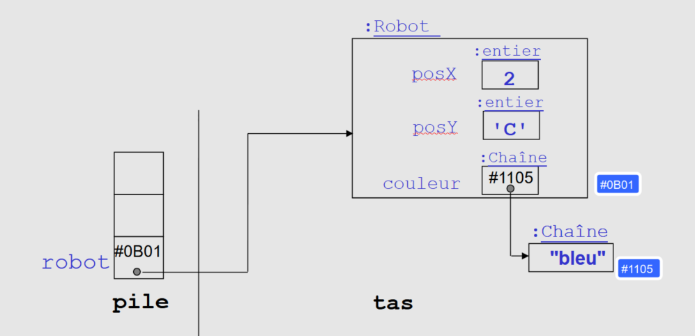

Présentation de la Compétence
📋 Définition
Proposer des applications informatiques optimisées en fonction de critères spécifiques : temps d'exécution, précision, consommation de ressources.
🎯 Composantes Essentielles
- en formalisant et modélisant des situations complexes
- en recensant les algorithmes et les structures de données usuels
- en s'appuyant sur des schémas de raisonnement
- en justifiant les choix et validant les résultats
🎓 Apprentissages Critiques
- AC1 Analyser un problème avec méthode
- AC2 Comparer des algorithmes pour des problèmes classiques
- AC3 Expérimenter la notion de compilation et les représentations bas niveau des données
- AC4 Formaliser et mettre en oeuvre des outils mathématiques pour l'informatique
1. Analyse problème avec méthode - Structures de données
💬 SAE 2.03 - Architecture modulaire temps réel
- Découpage fonctionnel : Client Java Swing + Serveur Apache/PHP
- Gestion temps réel : Rafraîchissement automatique messages
- Threading : Interface responsive, communication non-bloquante
- Structures optimisées : HashMap utilisateurs O(1), listes messages
- Persistance : Fichiers structurés pour données utilisateur
🧩 SAE 2.03 - Découpage modulaire
- Séparation client/serveur
- Classes distinctes par fonctionnalité
- Méthodes courtes et spécialisées
- Interfaces bien définies
🎮 SAE 1.01 - Progression algorithmique
- Exercice 1 : Lecture fichier → Structures statiques
- Exercice 2-3 : Événements → Gestion temps réel
- Exercice 4-5 : Ennemis → Déplacements basiques
- Optimisation collisions → Détection spatiale efficace
🎮 SAE 1.01 - Architecture MVC
- Classe Jeu → Modèle (logique métier)
- IhmCui → Vue (interface utilisateur)
- Controleur → Contrôleur (gestion événements)
- Classes Caisse, Ennemi → Entités spécialisées
📊 Structures de données utilisées
- char[][] → Grille de jeu (accès O(1))
- char[] → Inventaire compact
- Caisse[], Ennemi[] → Tableaux d'entités
- String[] → Liste des skins
🧠 TP Schéma Mémoire - Structures de données
- Représentation mémoire : Variables, pointeurs, allocation statique/dynamique
- Structures analysées : Tableaux, listes chaînées, piles, files
- Gestion pointeurs : Références, allocation/libération
📸 Screenshot : 
2. Comparaison algorithmes - Algorithmes usuels
💬 SAE 2.03 - Optimisations performance temps réel
- Communication HTTP : Requêtes asynchrones pour fluidité
- Rafraîchissement : Polling optimisé vs push pour chat
- Gestion mémoire : Cache images, nettoyage automatique
- Threading : Interface Swing non-bloquante, workers background
- Persistance : Écritures groupées fichiers vs individuelles
🔍 SAE 2.03 - Comparaisons algorithmes optimisation
- Recherche utilisateur : Séquentielle O(n) → HashMap O(1) choisi
- Synchronisation : Polling 1s vs Push WebSocket (Polling retenu)
- Persistance : BDD vs Fichiers (Fichiers pour simplicité)
- Threading : Un thread vs Multiple (Un thread suffisant)
- Justification : Performance vs Complexité selon contexte
📊 SAE 1.01 - Optimisations mesurées
- Détection collision : Grille spatiale → O(1) par case
- Mise à jour partielle : Seules zones modifiées redessinées
3. Outils mathématiques pour l'informatique
📝 SAE 2.01/2.02/2.05 - Algorithmes MPM mathématiques
- Forward Pass : Tôt(j) = Max(Tôt(i) + Durée(i)) pour tous antécédents i
- Backward Pass : Tard(i) = Min(Tard(j) - Durée(i)) pour tous successeurs j
- Marges libres : ML(i) = Min(Tôt(j)) - Tôt(i) - Durée(i)
- Marges totales : MT(i) = Tard(i) - Tôt(i)
- Chemin critique : MT(i) = 0, théorie des graphes orientés
- Complexité : O(n+m) avec n=tâches, m=dépendances (parcours graphe)
🧮 SAE 1.01 - Logique booléenne et conditions
- Conditions collision : (x,y) AND mur → Mouvement bloqué
- États jeu : (joueur == sortie) → Victoire
- Validation entrées : (touche == ZQSD) OR (touche == flèches) → Valide
📊 SAE 2.03 - Analyse complexité temps réel
- Polling messages : O(n) où n = nombre messages
- Authentification : O(1) avec HashMap utilisateurs
- Envoi message : O(1) écriture fichier + O(m) broadcast
- Optimisation fichiers : Écriture bufferisée vs directe
- Gestion mémoire : Nettoyage automatique objets temporaires
4. Schémas de raisonnement
🔄 SAE 1.01 - Patterns de conception appliqués
- MVC : Modèle (Labyrinthe), Vue (FrameGrille), Contrôleur (events)
- Singleton : Gestionnaire de ressources unique (sprites, sons)
- Observer : Interface → Modèle → Notification changements
- Factory : Création ennemis selon type (Goomba, Boss)
- Strategy : Algorithmes déplacement selon personnage
🎯 SAE 2.03 - Raisonnement architectural
- Décomposition : Chat = Authentification + Messages + Interface
- Dépendances : Client → Serveur → Fichiers (unidirectionnel)
- Architecture logique : Couches Présentation/Métier/Données
- Séparation responsabilités : Une classe = un rôle précis
- Extensibilité : Ajout fonctionnalités sans refactoring
5. Justification choix - Validation résultats
💬 SAE 2.03 - Choix techniques justifiés
- Java Swing : Natif, cross-platform, interfaces graphiques riches
- HTTP/PHP : Standard web, facilité déploiement, debuggage
- Docker : Portabilité, isolation, déploiement reproductible
- Fichiers texte : Simplicité, persistance, debugging facile
- Tests réalisés : Multi-utilisateurs, performance, stabilité
✅ Choix techniques justifiés
- Fichiers texte → Simplicité + Portabilité
- Swing → Natif Java + Cross-platform
- HTTP → Standard + Fiabilité
🧪 Validation performance
- Tests charge multi-utilisateurs
- Mesure temps réponse
- Optimisation refresh rate
6. Adaptation et autocritique
💪 Points forts
- Analyse méthodique des problèmes
- Choix structures données appropriées
- Optimisations simples mais efficaces
🎯 Axes d'amélioration
- Algorithmes avancés à approfondir
- Analyse complexité plus poussée
- Benchmarking systématique